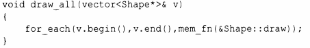

⇐13.8.1 Лямбда-выражения в качестве адаптеров 13.8.3 function⇒
Для заданной функции-члена функциональный адаптер mem_fn (mf) предоставляет функциональный объект, который может быть вызван как свободная функция, не являющаяся членом. Например:
До введения в С++ 11 лямбда-выражений mem_fn() и его эквиваленты были основным средством отображения объектно-ориентированного стиля вызова на функциональный.